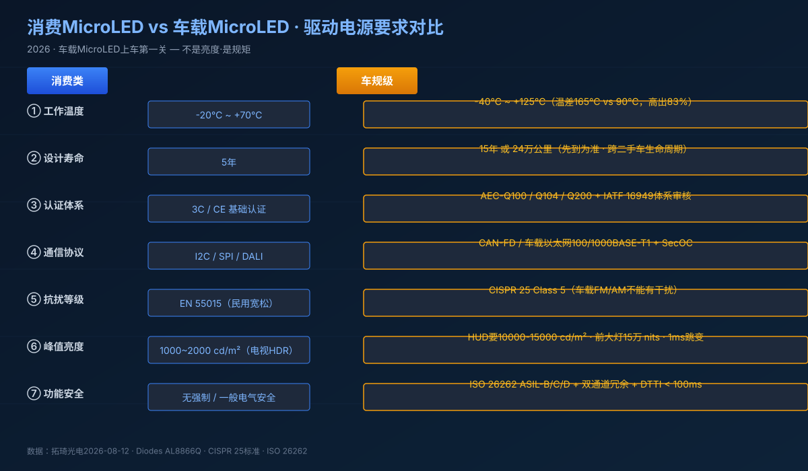
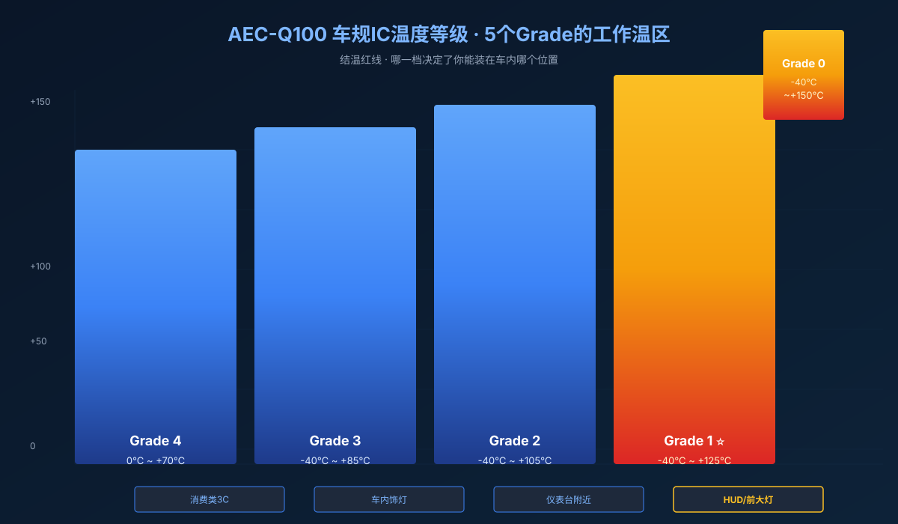

On August 12, 2026, the Torch Optoelectronics LED industry daily confirmed that the "MicroLED automotive track is heating up, with multiple enterprises advancing vehicle-grade production lines, targeting in-cockpit displays and AR-HUD." The same week, Diodes Incorporated released the AL8866Q — an 85V-tolerant, AEC-Q100-qualified LED driver supporting buck/boost/buck-boost/SEPIC topologies for headlamps, fog lamps, and turn signals. Back in January, Diodes had already shipped a 48-channel automotive LED driver for dynamic lighting and pixel-level diagnostics.
When those two news items are stacked together, the picture becomes clear: MicroLED is stepping out of phones and TVs and onto cars — HUD head-up displays, pillar-to-pillar cockpit screens, ADB adaptive headlamps. And the LED driver, this time, is not facing a performance race but a five-gate vehicle-grade compliance gauntlet.
1. The Hidden Truth: MicroLED Goes Car Not by Brightness But by Discipline
For consumer MicroLED panels, engineers debate channel density, PWM frequency, and current accuracy. But when the same die ends up in front of the steering wheel on the HUD, spanning the dashboard on a single-piece cockpit screen, or lighting up a 120-meter road ahead through an ADB matrix — the coordinate system changes entirely.

- Temperature. Consumer operates -20 to +70°C. Vehicle grade demands -40 to +125°C. Siberia-cold-start at -40°C, sun-baked dashboard at +85°C plus direct solar load pushing junction to +125°C.
- Lifetime. Consumer designs for 5 years. Automotive demands 15 years or 240,000 km — across first owner, second owner, and end-of-life recycling.
- Certifications. Consumer passes 3C/CE basics. Automotive needs AEC-Q100 / Q104 / Q200 (the three cornerstones) plus IATF 16949 manufacturing certification.
- Protocols. Consumer I2C/SPI. Automotive runs CAN-FD and 100/1000BASE-T1 automotive Ethernet.
- EMI. Consumer uses the loose EN 55015. Automotive follows CISPR 25 Class 5 — your FM radio receiver cannot hear a single buzz from the LED driver.
These five gates are not "metrics going up." They are entire design philosophies, P-device libraries, PCB materials, and test regimes rebuilt from scratch.
2. Gate #1: AEC-Q100 — The Driver IC's 12-to-18-Month Bootcamp
AEC-Q100 is the Automotive Electronics Council standard for IC reliability. A consumer driver IC can ship after back-to-back bench tests pass. A vehicle-grade driver IC, after tape-out, must pass 44 test categories and 100+ sub-items — and most of those tests run for 1,000 hours.

- HTOL (High-Temperature Operating Life): 125°C, 1,000 hours full-load — failure rates measured in ppm.
- HAST (Highly Accelerated Stress Test): 130°C / 85% relative humidity, 96 hours — simulates 10 years of humid aging.
- TMCL (Temperature Cycling): -40°C to +125°C for 1,000 cycles, 30 minutes each. The hardest item for MicroLED driver ICs.
- HTSL (High-Temperature Storage Life): 150°C for 1,000 hours.
- PC (Preconditioning) + HAST + FORT reflow + moisture + field-stress composite.
A Grade 1 (-40 to +125°C) compliant vehicle-grade driver IC needs 12 to 18 months from wafer tape-out to qualified automotive part number. HTOL alone burns 1,000 hours, full load, around the clock. This means the "multiple enterprises advancing vehicle-grade production lines" cited in the August 12 industry report can only ship their first Grade 1 MicroLED driver ICs by late 2026 or H1 2027.
Cost is also brutal. Third-party AEC-Q100 testing for one IC ranges USD $50k–$150k. It's worth doing the math: a one-time $150k test run for a chip that will sell 1 million units at $2 is nothing. For a low-volume specialty IC, it kills the business case.
3. Gate #2: HDR + 10× Brightness — HUD at 10,000 cd/m², Headlamp at 150,000 nits
The two most contested specs for automotive MicroLED are brightness and contrast — both directly challenge the driver IC's dynamic range.
HUD head-up displays must hit 10,000–15,000 cd/m² peak brightness to stay readable under direct sunlight — an order of magnitude above consumer TV HDR's 1,000–2,000 cd/m². The driver IC must complete a 0 (black state) to full-on (sunlight-readable) transition within 1 ms while keeping the entire image uniformly bright.
Adaptive Driving Beam (ADB) headlamps use pixelated MicroLED — 1 to 2 million pixels per vehicle, each pixel dimmed independently. The driver IC must:
- Hit ±0.5% per-channel current accuracy (same number we discussed for consumer MicroLED)
- Drive 1M+ channels simultaneously, with a daisy-chain channel expansion architecture
- Hit 120 Hz refresh as a floor — far above the 60 Hz consumer standard — to avoid motion tearing when tracking pedestrians
Pillar-to-pillar cockpit screens spanning the dashboard from driver seat to passenger seat. MicroLED's native advantage is independent zone dimming, achieving 0.001 cd/m² "true black" in dark regions and 1,000,000:1 contrast. The driver IC's dark current must drop to nA level — consumer driver ICs typically settle around μA.
4. Gate #3: CAN-FD and Automotive Ethernet — A Protocol-Stack Generational Leap
Home smart lights ride Wi-Fi/Zigbee/BLE Mesh. Automotive MicroLED runs a completely different stack:
- CAN-FD at 5 Mbps — for headlamp dimming, turn-signal chases, HMI feedback
- 100/1000BASE-T1 automotive Ethernet at 100 Mbps+ — for HUD graphics sync, cockpit multi-screen interaction
- LIN at low speed — for welcome-mode animation, light-language sequences
What the driver IC has to do in this gate:
- Hardware: Integrate CAN PHY or Ethernet PHY directly — the era of "driver IC + external MCU" is over. SoC integration is mandatory.
- Protocol: Support CAN-XL (up to 20 Mbps, the 2026 standard) and 10BASE-T1S (the new entrant for low-speed automotive Ethernet, finalized in 2024 and ramping through 2026–2027).
- Security: Implement SecOC (Secure Onboard Communication) — defense against CAN bus injection attacks. The Jeep Cherokee hack from a decade ago was the canonical warning shot.
The Torch industry report on August 12 specifically highlighted "AI predictive O&M systems migrating into mid-tier products" — but the automotive equivalent isn't cloud inference, it's on-device CNN running on a microcontroller with NPU. The full sense-think-act signal chain must complete inside 10 ms.
5. Gate #4: ISO 26262 Functional Safety — From B-Capable to ASIL-C/D
The most underestimated gate for MicroLED going automotive is functional safety.
ISO 26262 grades automotive electronics A through D (ASIL-A/B/C/D). HUD and cockpit HMI are ASIL-B — failure makes operation "difficult but not immediately dangerous." ADB headlamps are ASIL-C — failure could cause "serious harm." Turn-signal lamps are ASIL-D — failure could cause "life-threatening or fatal harm."
To reach ASIL-B/C, the driver IC must:
- Dual-channel redundancy — primary/backup switching with fault detection time under 10 ms
- Built-In Self-Test (BIST) — at power-on, power-off, short circuit, open circuit, overcurrent, overvoltage, overtemperature: every credible fault must be self-detected and reported
- Diagnostic coverage > 90% — open/short/temperature/luminance anomalies for every pixel, located to the pixel level
- Dangerous Time to Fault Interval (DTTI) < 100 ms — HUD blackout or full headlamp-off window must not exceed human-perceptible 100 ms
Diodes' August release of the AL8866Q explicitly lists "enhanced fault reporting" — that's the vehicle-grade baseline. TI, Infineon, and Renesas are all rolling similar multi-channel automotive LED driver specs in 2026 H2 — meaning the second half of 2026 is the dense-shipment window for vehicle-grade MicroLED driver ICs.
6. Gate #5: 15-Year / 240,000-km Longevity — The "Built-to-Last" Doctrine
The lifetime design requirement for an automotive LED driver is fundamentally different from consumer:
- Design lifetime: 15 years or 240,000 km, whichever comes first
- Junction-temperature red line < 150°C (consumer: < 125°C)
- IMS aluminum or AlN ceramic substrate (consumer FR4 is insufficient)
- Lead-free reflow + conformal coating (moisture, salt-spray, chemical resistance)
- Full PPAP documentation package for the automaker's APQP/DFMEA/PFMEA workflow
That last point is where most consumer-grade LED driver makers stumble. PPAP isn't a single certificate — it's a 18-element Production Part Approval Process document including design records, material certifications, process flow diagrams, control plans, MSA studies, and initial process capability (Cpk ≥ 1.67). Most Tier-1 automotive suppliers estimate that PPAP preparation adds 6–10 weeks of project time.
This means the driver IC itself must be selected from industrial-grade -40 to +125°C devices — LM5163, TPS92692, IS32LT3175, or similar industrial-grade parts. Standard commercial LDOs and DC-DC regulators get filtered out at the automotive part-numbering stage.
For end-of-life, the EU ELV Directive (End-of-Life Vehicles) has already listed LED modules in the recycling catalog. Automotive MicroLED driver ICs must comply with RoHS 3.0 + REACH + PFAS (forever-chemicals) restrictions — which forces a re-design of the PFC inductor, magnetic materials, and electrolytic capacitor Bill-of-Materials.
7. Where the LED-Driver Industry Should Move First
To wrap up, here are five concrete action items for LED-driver manufacturers — these are "front-of-customer" paths, not aftermarket replacement:
Start with Grade 2 — interior lighting and ambient lighting first. Don't go after HUD or headlamps yet. Grade 2 has the shortest certification cycle, highest ASP, and largest TAM. The interior ambient lighting market alone grew to $4.6 billion in 2026.
Subscribe to the AEC-Q100 standard. Vehicle-grade certification isn't a reference, it's mandatory. Subscribe and read the spec — understand the physics behind each of the 100+ test items, not just the names.
Build a vehicle-grade test line — but only at scale. HTOL + HAST + TMCL are mandatory. Third-party testing costs $50k–$150k per IC. Self-build only makes sense at > 50 IC variants per year.
Hire or train CAN-FD protocol engineers. Protocol stack isn't a port-and-rewrite. You need engineers fluent in AutoSAR Classic Platform and Adaptive Platform architectures.
Watch vehicle-grade Mini-LED MNT backlights carefully. They are the lowest-risk migration path from consumer into vehicle grade — same LCD-backlight driver physics, just certified to ASIL-B.
Closing thought. A 2026 forecast pegs the MicroLED automotive market at USD $120 million; by 2030, it reaches USD $4.8 billion — a CAGR of 110%+. That's faster growth than the consumer MicroLED market. Because every MicroLED on a car is high-ASP, high-margin, and long lifecycle. The MicroLED driver is the LED manufacturer's entry ticket from "consumer supplier" up to "automotive Tier 1."
I'm Lai, engineer at NEXLAMP Smart Lighting. I've spent 15 years in LED driver power supply design and smart lighting system integration. This article is the second in the "MicroLED goes automotive" series — the first piece covered consumer MicroLED "channel switching," this one covers automotive MicroLED "passing the five gates." Together they form a panoramic view of how MicroLED will reshape LED driver requirements through H2 2026 and beyond.
Sources: Torch Optoelectronics Daily Industry News, August 12, 2026; Diodes Incorporated AL8866Q datasheet (August 2026); AEC-Q100 Rev-H (Automotive Electronics Council); ISO 26262:2018; CISPR 25 Edition 5; Yole Développement Automotive Lighting Report 2026.
Tags: MicroLED · Automotive · LEDDriver · AutomotiveEngineering